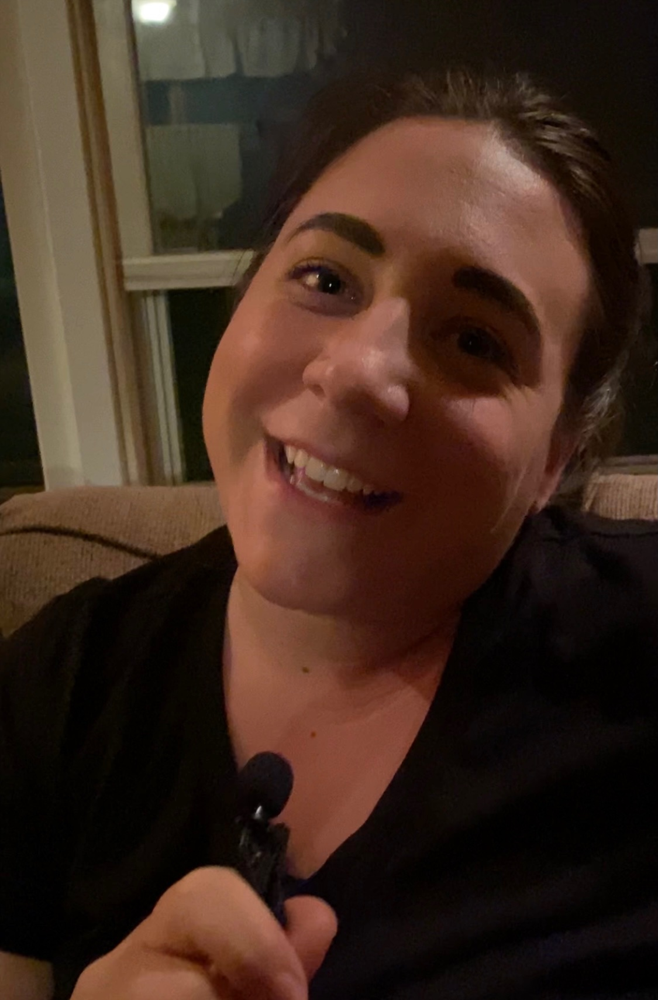

Conducting an audio story interview can no doubt be an interesting endeavor- but for a first timer such as myself, it proved rather difficult due to a few monkey wrenches being thrown in. A few notable hiccups included getting the microphone placed right, especially on different speakers, and collecting relevant natural sounds. These two problems slowed down the process quite drastically. This made it rather difficult for me to get into the swing of things.
 When I began brainstorming for my audio interview, I felt as though it would go off without a hitch, however this proved not to be the case. Take for example both of my sisters, one being extremely loud and boisterous, and the other shy and quiet. Getting the microphone placed correctly on my loud sister became a task I was not prepared for. Every time I sat down to record, the video had blown out audio due to her…”well-projected voice.” It took upwards of five times to get the microphone placed in a way that was not offensive to the ears. On the complete opposite end of the spectrum, getting my little sister to match her volume was a task as well. Trying to balance her with my other sister became awkward, and again, it took some trial and error to get the microphone placed well.
When I began brainstorming for my audio interview, I felt as though it would go off without a hitch, however this proved not to be the case. Take for example both of my sisters, one being extremely loud and boisterous, and the other shy and quiet. Getting the microphone placed correctly on my loud sister became a task I was not prepared for. Every time I sat down to record, the video had blown out audio due to her…”well-projected voice.” It took upwards of five times to get the microphone placed in a way that was not offensive to the ears. On the complete opposite end of the spectrum, getting my little sister to match her volume was a task as well. Trying to balance her with my other sister became awkward, and again, it took some trial and error to get the microphone placed well.
Another issue I had to overcome was that of gathering natural sound. Since I conducted both of the interviews at home- I had to brainstorm what exactly natural sounds would be. Should I use natural sound from my house...or should I try to imitate the natural sound that would be present in the locations we were speaking about (school)? I thought at first that natural sound would be easy not only to come up with, but to capture. I was wrong on both fronts. Often, we take the sounds around us for granted, and we don’t really take note of them...until you’re frantically trying to find sounds to record. Eventually, I sussed out what to record, and recorded it (after many attempts).
While recording for an audio story was a daunting task, I feel as though I learned a lot of practical knowledge. How to place a microphone on different speakers, and how to even think about natural sound being the key takeaways. In conclusion, it was a tough, yet fulfilling assignment.
